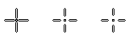
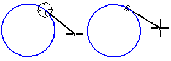
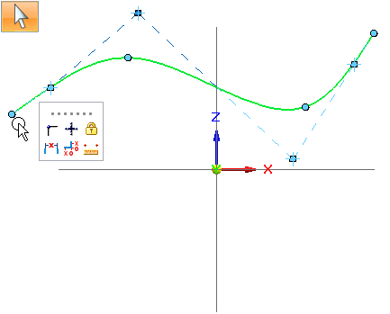

Cursor page (IntelliSketch dialog box)
- Cursor Setup
-
Sets the sizes of the IntelliSketch Locate Zone and Intent Zone around the cursor.
- Locate Zone
-
Sets the size of the IntelliSketch locate zone radius. The locate zone is a region around the cursor.
IntelliSketch recognizes relationships based on elements within the locate zone so that you do not have to move the cursor to an exact position. For example, if part of an element is within the locate zone, IntelliSketch recognizes a Point On relationship.
The size of the locate zone is indicated by the space between the cross-hairs and the cross-hair center. The range of values are from 3 to 12 pixels.

- Intent Zone
-
Sets the size of the intent zone radius. Intent zones allow drawing commands to interpret your intentions as you draw. Values from 3 to 12 pixels are valid.

- Preview
-
Shows the size of the locate zone.
- Do not show keypoints in Select command
-
Some 2D sketching commands in the Ordered environment accept a preselected keypoint as input. This check box specifies that when the Select command is active, you can select a keypoint on a 2D sketch element and use it as input to the next command that you choose.
Example:Using the Select command, you can click a highlighted keypoint on a 2D sketch element, and then choose one of the commands on the context menu that is displayed in 2D sketching.
